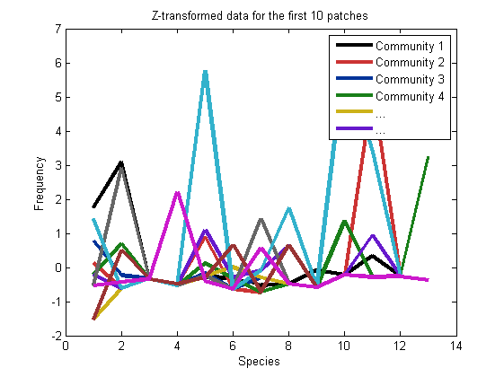
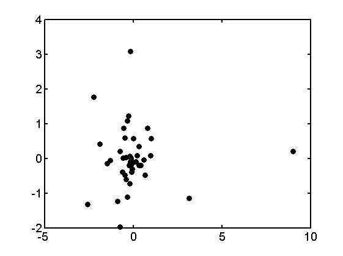
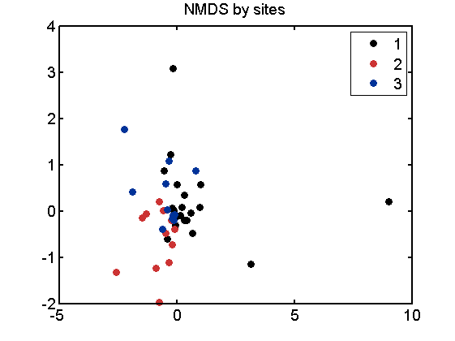
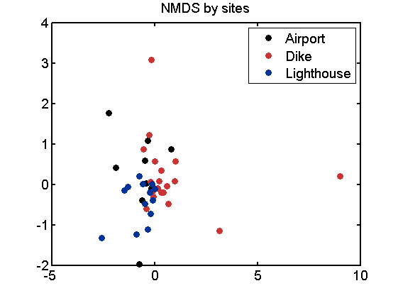

Usage example of function plot_NMDS
Input
- [data]: n rows each represent on observation, p colunms each represent a variable
- [groups]: Optional, vector of length n, numeric, the group id of each observation
Contents
Setting up and load data
clear;clc % load data load my_colorplates insect_data= load('insectdata.txt');% community data rawdata = insect_data; group= load('group1.txt'); % group information, numeric group2 = importdata('fakedata.txt'); % group information in text % Files like this can be created using excel "save as" .txt [n,p] =size(rawdata);% There are n sites and p species.
Data description
- insect_data : 44 x 13 matrix, data for 44 (n) patches and 13 (p) species
- group : numeric vector of size n, "site" information
- group : cell array of string of size n; "site" information for patches
I will use data [insect_data] in this example; where patch represents "observation", species represent "variable"
I will use the three "sites" of patches as group, to plot with different color
Z-transformed
one way to get normality is Z transformation; other methods including log(N+1) and square root
uncomment this to log-transform, and replace Zdata with Ldata in following codes
Ldata = log(rawdata+1)
Z = (X-mean)/std
Zdata= zscore(rawdata); % Plot figure for i=1:10 plot(1:13,Zdata(i,:),'Linewidth',3,'color',mycolor(i,:));hold on end xlabel('Species'); ylabel('Frequency') legend('Community 1', 'Community 2', 'Community 3', 'Community 4','...','...') title('Z-transformed data for the first 10 patches')
NMDS and plot using plot_NMDS
[groups] is optional, using Z-transformed data as the sole input gives a simple scatter plot
plot_NMDS(Zdata)
Adding input [groups] can seperate the
plot_NMDS(Zdata,group)
title('NMDS by sites')
 Separating the points (observations) by group: cell array of string
plot_NMDS(Zdata,group2)
title('NMDS by sites')
